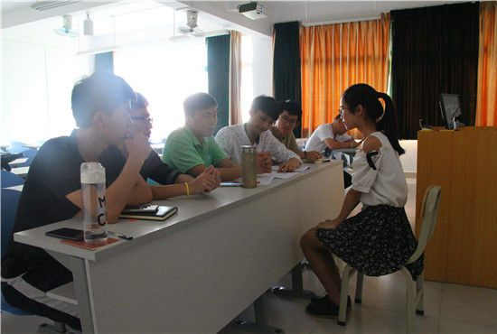

本网讯 为给即将到来的17级新生选拔合适的导生人选，5月11日下午，软件工程系在教学楼U401、U402举行了导生及导生助理第一轮面试。担任本次面试的面试官有钟伟涛老师、杨澄生老师、牟兴淋老师及16级导生代表。

面试官面试参与选手
在本次导生面试中，同学们时而应对如流，时而绞尽脑汁，对面试官的提问，也都各抒己见。面试官在问题的提问设计上，不仅关涉到学生个人学习成绩、相关干部工作经验，还注重其是否具备较强的团队意识、语言逻辑表达等综合素质能力，旨在从中选出各方面都达标的导生。
参与选手的介绍及回答
虽然参与面试的同学对面试问题有着不同的看法，但是他们的志愿却是一致的，那就是怎样去做好一名合格的导生、怎样更好的去为新生服务。在此，祝愿他们在接下去的考核中能取得优异的成绩。
（供稿: 软件工程系 陈运筹）